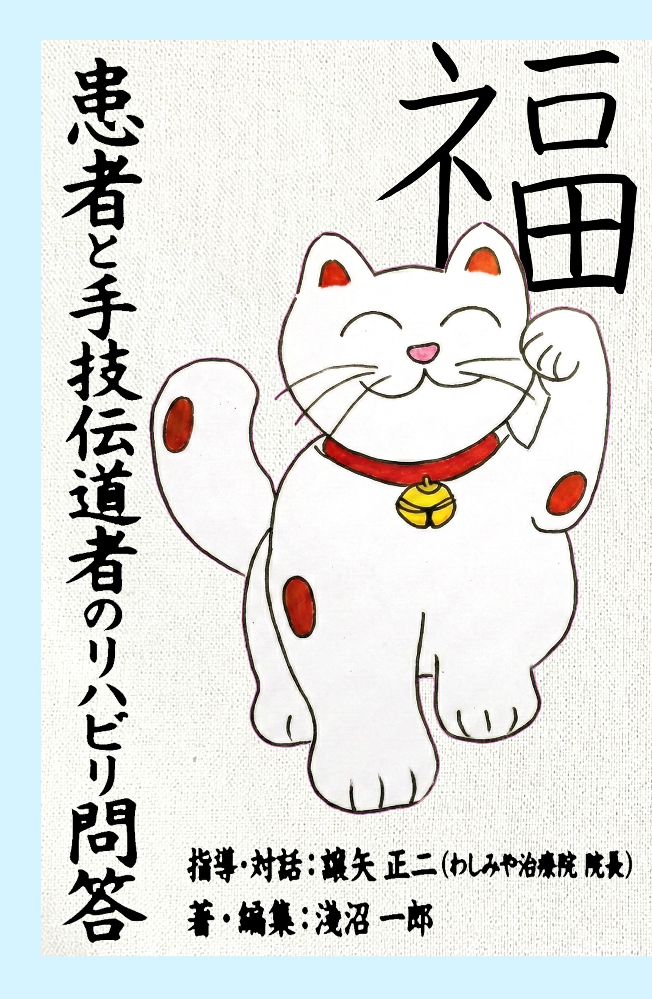

A wellspring of the power to persist, to gain insight, and to enjoy. It is a place to share, little by little, the wisdom and experience for leaving to machines and AI what they can do and moving toward what only people can do.
Find Wisdom
Tools, templates, and datasets—the practical wisdom directly ready for application.
An introduction to the books we have published so far.

Tools and operational templates for quality management and process standardization.
Sharing competencies and training datasets designed for effective AI utilization.
Validation-related tools tailored for the rigorous accountability required in the pharmaceutical sector.
Sharing practical tools and learning resources to support language acquisition.
Content across each category will be released progressively over time.